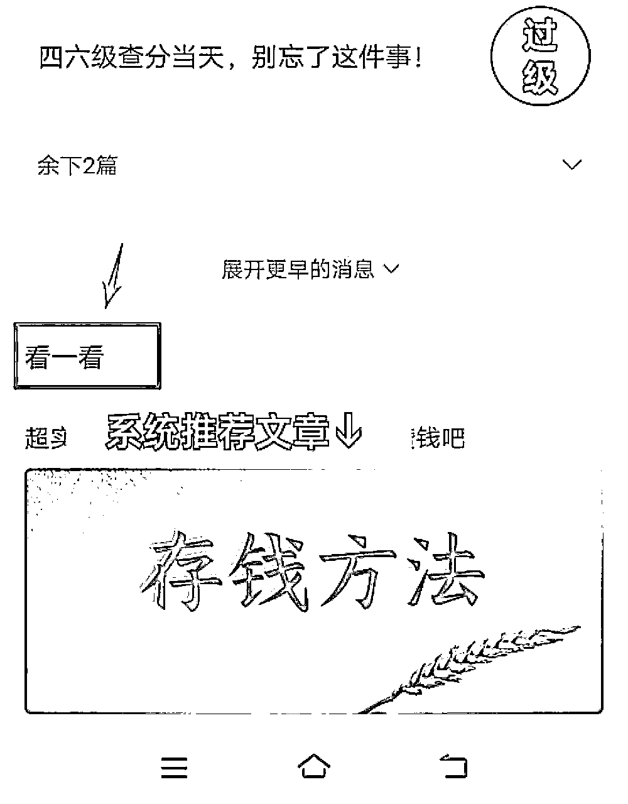
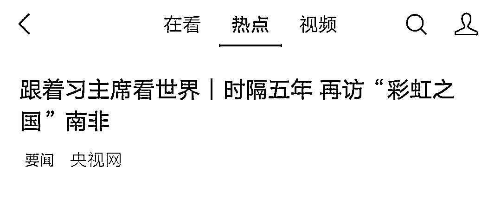
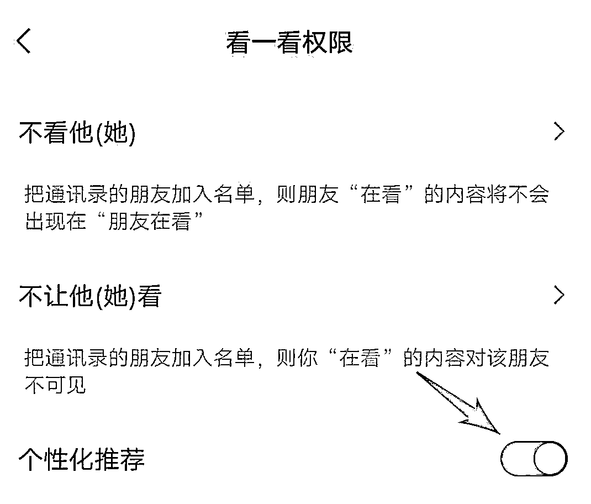
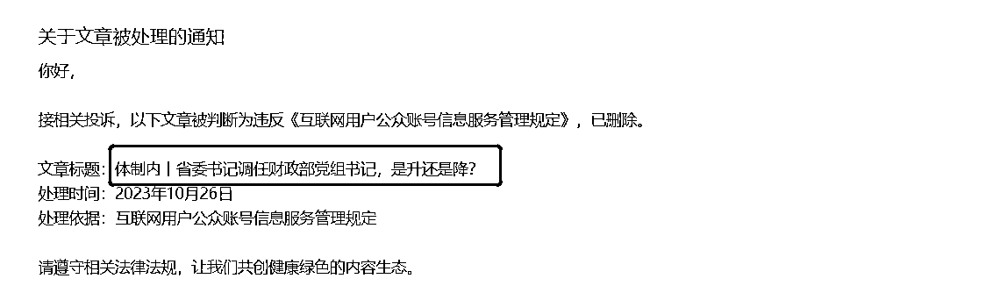
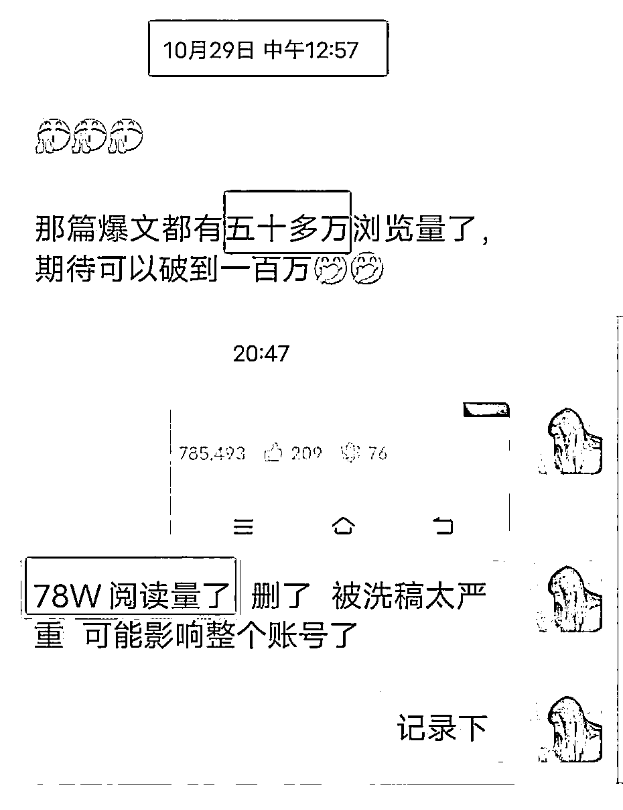

来源：https://die28mmde0k.feishu.cn/docx/C6EadVsJzour7oxsfSzcxtLTnZb
嗨，生财的各位圈友老铁们，我又来啦。
上次在咱们星球分享的这篇：https://t.zsxq.com/14eXRMdTU，没想到，时隔一个多月，在公众号爆文领域，我从10W+到112W+啦。
感谢生财各位大佬的滋养，平时围观划水居多，也默默看到很多大佬分享了很多成绩和干货。
今天的这篇，向各位大佬学习，诚意满满地和大家分享：112W+爆文拆解复盘。
没错，这是一篇拆解文，致力于拆解到让每一位公众号小白都能看懂，看完都能实操、通过公众号爆文项目赚到第一块钱！
文章总共分为3个板块，第一个板块是我身为小白一路走来的历程，第二个板块是对这篇爆文的拆解，第三板块是一些注意事项。
如果赶时间的朋友，可以直接跳到第二个板块和第三个板块。
如果想一起捋一遍的朋友，可以从第一部分看起哦。
和诸多圈友一样，我觉得，如果你想看这个人为什么能取得这些成绩，是要先去扒一扒这个人过往or当下做了什么的，只有这样，我们才能知道，这个人起来到底是因为运气还是实力、有没有可复制性。
好了，咱们进入正文。
我是安七，人送外号“安百万”，目标是达成公众号文章100W阅读量（已达成）、25岁赚到100W（努力中）的湖南妹子。
今年毕业，开始创业，在毕业后成功实现月入过万的一人公司小老板。
目前业务2个板块：一个，是公众号爆款文章；一个，是新媒体代运营。
这些是我的标签，但真实的我其实是这样的：
一个从小到19岁都很听话的乖乖女，家境非常一般，智力也一般。
当年拼死拼活，才考上了本省一个18线小城市的普通二本，选了一个自己不喜欢、却是“父母之言”的专业：老师。
19岁，上大学是我人生中的一个转折点。
因为我从小到大都是被家人安排的那种，所以上大学后颇有种“天高皇帝远”的感觉，可以放飞自我、有自己的空间。
大一因为很迷茫，不知道自己要做什么，所以到处参加活动，误打误撞认识了一个学姐，被她介绍到一个教大学生认知的机构去学习，开启了知识付费。
那个时候真的猛，第一次知识付费就是上万，纯纯小白被割。
但当时学完后劲很大，觉得：“哇，原来世界还可以这么大”，非常入迷，以至于周围的同学怀疑我是不是被洗脑、进了cx。
现在看来，也不算很亏，至少开拓了很多认知，这些是身为普通大学生在线下很难接触到的知识。
迄今为止，它教的“主动才会有故事”观念依旧影响着我，且发挥巨大作用。
可以说，如果不是这个点，我很可能认识不了阿猫、明白老师、进入不到生财有术，
也就更不可能链接到我的天使投资人：张昭（全国黄焖鸡米饭第一人）
所以，就像那句“人生白走的路”一样，很多时候，一些看起来无关紧要的点，到后面却能串成一条线，甚至是拓展到面。
大学4年，因为很早就明确自己以后不想当老师，所以我把该考的证考了后，很多时间精力都花在探索其他可能性上，对本专业的知识其实掌握的不多。
大三开始，因为认识阿猫、在他的圈子学习冒泡，误打误撞开启了自己的自媒体之路。
大四毕业就创业，这点其实不在我的计划范围内，我没有设想过这一part，也是机缘巧合、被拉了一把，才能走上正轨。
当时6月份毕业，注册了个公司放那里，轮廓雏形啥的，都不具备。
7月份，闲着也是闲着，找朋友的号练手，模仿爆款文章去写，慢慢的出了成绩。
（真的是慢慢出成绩，写了10多天，都是几十个阅读量，没有什么起色。
在我想放弃的时候，第二天它突然飙升上万的阅读量了。）
8月份，出了10W+、多篇上万阅读量的文章，开始思考这个：是不是可复制的？
尝试做了一个课，列框架，试着不同领域迁移。
如果可行、可复制，可以从0到1、甚至100，那这个就可以做，且值得被放大。
而且：
①虽然很多人都唱衰公众号了，但经过我自己从纯小白的身份开始进行尝试且取得成绩来看，公众号爆文领域，还是大有可为的。
每一年都有人唱衰公众号，但不妨碍依旧很多人通过它赚到钱。
总有人进场有人离场，我们应该感谢那些离场的人，因为他们的离开，为我们让出了位置。
②公众号背靠上亿的流量，微信不倒，公众号不倒，在相对来说稳定的领域赚钱，是当时我的一个救命稻草。
于是9月份开始说干就干，教别人做，第一批只有10个人，但10个人都出结果、成功变现。
其中一位小白同学，刚写3天就爆了一篇10W+、25天成功变现4000+，是学费的N倍。
这更加鼓舞到我了！和生财有术的理念不谋而合：带别人真正赚到钱，是比单纯只赚钱更有使命感和有价值的事儿。
虽然一切都刚开始，但带别人真正出成绩后，就有信任的种子在发芽，为自己种下福报的种子啦。
实事求是的说，这篇112W+爆文，有运气，也有一定成功的心法。
尽自己所能，拆的比较详细。
如果你是第一次看这篇文章、前面没有写过公众号爆文、不知道怎么开启的纯纯新手，建议先看下我之前的这篇文章：https://t.zsxq.com/14eXRMdTU
或者是你有收藏其他大佬的有关文章、能够掌握基础的知识，也是OK的。
今天的拆解，不再赘述基础知识。
首先，和大家分享下我写文的一些心法
如果你想追求比较快地爆，找对大概率爆的赛道很重要。
这篇112W+爆款，赛道选的是：体制内（我是这么叫的）
像：“体制内最辛苦的XX个单位”“二十年副科舅舅提点我：在体制内……”
这些都是。
为什么会选择这个赛道？因为当时漫无目的的狂刷，刷到这个类型的很多。
而且，爆的也很多。
我一搜“体制内”出现很多爆款，而且都是【近期】有出爆款的。
这个时候我意识到：这个赛道，或许可行。
总结：
如果你想比较快的爆，找对赛道很重要。
能被你刷到的文章，都是获得系统推荐的。
当你刷到某个类型的比较多，那你要注意这个“异常值”。
确定好自己的领域后，我们就要观察，怎么样才能写出爆款？
我拆解了下我的这篇文章，认为这几点是非常重要的：
爆款的核心逻辑，其实就2个：找对近期爆款+模仿爆款标题
我的这篇文章是10月16日的，之所以会写它，是因为我发现有篇同领域文章是10月14日爆了、10W+。
才2天时间，流量能够这么猛。爆款都是重复的，它写这个能爆，我写的话，是不是也大概率能爆？
所以，就模仿它了。
一开始没有起色，一两万的阅读量吧，后来慢慢跑到了10W+，没想到能跑到现在112W+。
很多人不信邪，觉得找之前爆的也可以。
可以是可以，但比较难。
因为之前爆过的，也许是踩中了某个点、趋势，大部分文章都有时效性。
比如你现在写“牵手门事件”，流量已经没有什么了，它就是那个时间的产物。
除非有1种情况的，我会不太看重时间，爆了也模仿。
这种情况就是：我在很多地方、不同时间段，都看到过这篇爆款文章的类似标题。
举个例子：
我之前写情感号的时候，有篇同行爆款文章标题叫“情侣恋爱周期表”
没错，就这几个字，小花5个月前写，爆了；小明2个月前写，也爆了；小亮1个月前写，也爆了……
那这篇文章的爆款标题，我感觉它是【通用的】，我才会去模仿。
结果来了：
模仿这篇标题写的文章，当时阅读量没起来的时候，阅读量不大，2位数；
后来，公众号爆了后，它有8.8W的阅读量。
PS：
还是建议，优先考虑【近期爆款】文章。
别自己瞎想，不要觉得同行没有自己聪明。当你在费尽心思找爆款的时候，同行也在找的
既然他们找的，已经经过市场验证了，我们借势就好。
【近期】的意思是：（时间）最好是1-3天的，次考虑3-5天的，不要超过7天
【爆款】的意思是：（阅读量）最好是10W+的，次考虑5-10W，然后才是1-5W
主要是3个大的入口：
1.在你看完文章后，往下拉，会出现很多其他被系统推荐的文章。

2.在你看完文章，点赞、点在看后，文章下面也会出现其他得到系统推荐的相关类型的文章
（不要舍不得给别人点赞，你给别人点赞了，系统也能大概判断你的喜好，自动给你推荐同类型的文章
省去了很多时间，自己一个个找很麻烦的）
3.在微信首页“发现”—“看一看”—”热点“
这个里面也会出现一些系统推荐的文章，
如果你打开了“个性化推荐”，系统还会根据你的喜好，推荐你喜欢类型的文章给你。
建议大家都把“个性化推荐”给打开，避免后期大海捞针般，花很多时间去找。
前期找到方向后，一定是要【大量刷同行】的文章，后期系统知道你的喜好了，才会给你推荐。
并且一边刷，一边还要做个对标选题库，把人家的爆款文章收集起来，方便我们后期进行拆解。


我这篇爆款文章，标题是：中国唯一的XXXX
其实也是借势，借国家的势。
而且这个标题比较OK，
很多写“中国唯一的XXX”“我国唯一的XXX”阅读量都还OK
这篇文章是用AI+我稍微润色写出来的。
因为是AI写的，所以其中有个地方错了，但我没有看出来就发了。
没想到这成了它大爆的原因之一：误打误撞的一个错误点，引发了争议。
很多喷子在后台喷我，也有一些人留言说写错了。
这点在前期是助力了一波的。
我的这篇爆款文章只有1000个字，完读率30%多
（是这周的，前面完读率我没有看，可能到后面完读率和推流都比较少了）
写爆文后，我发现：
文章真的不能自我感动，辛辛苦苦写了一两千字，可能还不如别人八百一千字、甚至是100字+1张表的。
爆和你的写作能力没有必然联系，更多的是和你的爆文思维：知道什么是爆文、怎么找爆文、正确模仿爆文有关。
有位圈友提到过的，900字左右就可以开2篇文中广告了，没必要非得写到1500字甚至更多。
文章越长，完读率越一言难尽，倒不如找对爆款后精简点，把该写的写完。
爆文号是这样的。
除非你做IP号，写深度长文就完全没问题。
这点是细节方面的。
写完文章后，引导大家点个赞有利于传播更多。
我的这篇是写中yang党校的，是写人家好的方面，比较客观公正、符合正能量。
很多有情怀的、觉得你写的好的，会主动给你点赞。
正能量是符合人性的，这点，很多中老年人觉得看过瘾了、看得开心了，就会主动给你点赞。
还有一个点，纯属个人猜测：
可能，我是说可能顺应了某种宣传需要
以上6个点，就是这篇百万文章的一些拆解复盘。
写这种体制内的，很容易涉z。
稍有不注意，就很容易违规。
我原来有2篇文章，写了：某某官升至某个职位，是升还是降？

结果2篇都被提示违规，被系统直接删除了。
（有的同行的没有被删除，但我个人觉得，还是不要抱有侥幸心理比较好。）
还好这个号是老号，之前也没有违规过，有一定权重，这才没有影响后面的，还能出一篇78W的、一篇112W的。

这种涉及到官位升降的，我的建议是不要去写，保住号要紧。
如果你想写体制内类型的号，不要站队。
可以写那种不涉及关键信息的、像那种什么单位最轻松、什么单位最累人之类的，很多公众号都写，这个一般问题不大。
我发现，有朋友存在“爆款羞耻”：一方面，想写爆款文章，但是另外一方面，觉得爆款文章“这写得都是什么啊，标题党，我不要”
觉得爆款文章都是哗众取宠、标题党、恶意的……
不是的。
我之前还非常年轻的时候，也觉得自己要做“一股清流”，不愿写那些夸张、调动人情绪的标题。
结果就是公众号自嗨，写了两三年都没有什么起色，赚了几百块钱，还是广告费。
认真地说：如果你想通过爆文赚钱，就要放下文章洁癖，顺应人性。
就像我们平时看文章，哪怕有些标题看起来很标题党，但不可置否的是，我们还是会点进去看、给人家贡献阅读量不是吗？
别人写得好，就值得学习。
第二种容易局限人的思维，就是认知卡点：总觉得要自己会，才能写。
如实和大家说，我同时写7了个不同的爆文领域，每一个，都不是我擅长or很专业的。
比如我的这篇百万爆款，写体制内的。
我前面提到过，自己都不想当老师的，怎么会知道体制内的一切事儿呢？不会啊……
但我敢写。
因为我知道，不会没关系，知道资源整合就好了：
① AI会嘛，用国内版文心一言，国产AI，知道国内行情和相关ZZ
② AI有错误怎么办？百度搜下，或者去有关的官网搜
学会资源整合，太阳底下没有新鲜事，很多东西别人都写过，我们并非原创，只不过换种表达。
不是所有都要准备好才开始做的，边做边完善。
做不好还做不坏呢。
像我有学员平时喜欢看极简类的文章，也想写这方面，但是自己没有相关知识储备，也没有相关案例，跑来问我怎么办？
我说：简单，你调教AI，或者小红书搜。
小红书有很多这些内容，大同小异，你参考下，用自己的话表达，
或者说，你把内容丢给AI，调教它：
“假设你是一个公众号爆款文章作者，请你模仿下面这段话，并重新生成新的话。注意：不能一模一样，不能被鉴定为抄袭”
（举个例子，这是我习惯的调教方式，因为我没有研究过提示词，所以一般都很口语化，一般告诉它：角色+需求，就差不多了）
内容来源就解决了。
那素材怎么办？
如果你会编，编出符合人类逻辑的故事/例子就可以啦。
如果你不会编，就要靠平时多收集和留意这方面，建立你的“素材库”，
素材库来源：
知乎故事、短视频平台刷到的故事、身边人的经历、自己的灵感、评论区热评（之所以能获得这么多点赞，一定是顺应了人性的）
按照上面6个步骤出发，爆款概率会增加很多，但不是必然爆。
现在想来其实非常危险，因为我第一次从小白开始写爆文的时候，是差一点点放弃的。
如果那个时候真的放弃了，就不会有现在了，很多机会都会失之交臂。
看不到结果、希望，嘴上知道要“长期主义”，但是心里面止不住的焦急……
这些，我都经历过，所以也非常理解。
但现在我想开了：如果方法没有错，凡事坚持个21天再说，7-21天，是一般的公众号入池时间。
方法没错，入池是迟早的事，不要急，毕竟结果也不以你的意志为导向。
如果一直没有入池，要看看方法是不是错了，每个领域其实都是有爆款的。
最后，祝愿大家都大爆！2023年的最后一个多月，抓紧写爆文，干！
欢迎大家链接、反馈，一起生财有术！